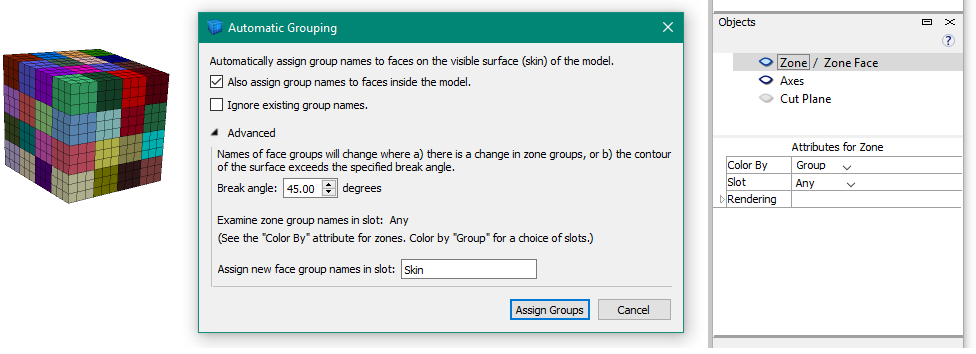

自动分组
为面指定分组名称的一种快捷方式是使用“自动分组”对话框。该对话框可以基于分配给网格单元的分组（使用所选的任意槽位），为面分配分组。它还会考虑平面性：可以指定一个折角，凡是面的轮廓超过该折角的位置，分组名称都会改变。
可以选择仅将分组分配给模型的表面，也可以同时分配给内部的面。无论哪种情况，只要网格单元分组名称发生变化，面分组名称就会随之改变，除非勾选“忽略现有分组名称”复选框。


当对象控件组中的按…着色属性设为分组时，槽位属性决定模型窗格中显示的颜色方案。这可以显示出分配面分组时会考虑哪些颜色变化。
| 这些内容对您有帮助吗？… | FLAC3D © 2019, Itasca | 原文更新于 2020 年 10 月 8 日 |
| 版权与免责声明 | ||